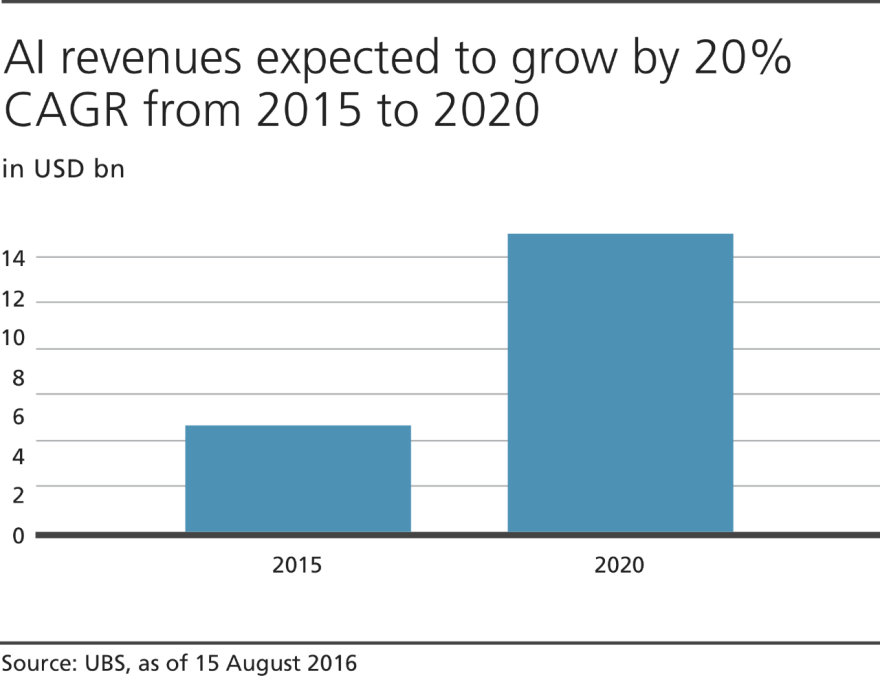

The modern definition of artificial intelligence (or AI) is "the study and design of intelligent agents" where an intelligent agent is a system that perceives its environment and takes actions which maximizes its chances of success.
Source: Science Daily
In the next four years, we expect AI’s industry growth will start to explode and its impact on business and society will begin to emerge.
AI software will create significant business opportunities and societal value.
Are we at risk of being replaced?
Technological unemployment is unfortunately a byproduct of progress.
Mechanized looms reduced artisan weavers to poverty, the tractor forced millions out of jobs and robotics has sliced countless workers in all types of manufacturing. The increasing integration of AI will ultimately yield greater productivity in the near term, the result of which has historically led to culls in employment. The concerns are legitimate, but during this period AI will not nearly be at such a developmental stage that its widespread adoption will trigger mass layoffs. The technology will still be used in relatively niche applications and will not yet achieve a level of critical mass that would threaten employment on a global scale. The people who are well versed with development of AI applications will have a better chance of surviving this. As there will always be need for people who can train these robots and build new ones for different applications. (Until we come up with a single robot that can do anything).
In most areas, AI is poised to replace tasks, not jobs.
However, global employment will not escape unscathed. By automating tasks that rely on analyses, subtle judgments and problem solving, AI can be a threat to low-skill, predictable and routine jobs in industries like retail and financial services and indirectly through the broader automation of the auto industry and certain other manufacturing industries. While it is difficult to project the exact impact at this stage, assuming 5% of the jobs in these industries are routine in nature, we expect 50-75 million jobs globally, or 2% of the worldwide work force, will be potentially affected due to the advent of AI – a significant number, but one that pales in comparison to the opportunities AI will create. AI's rise and ensuing surge in productivity will spur a plethora of opportunities for employees to upgrade their skills and focus on creative aspects. With the emergence of other disruptive business models like apps or sharing economies highly likely in a post-AI era, there is increased scope for jobs that require a high level of personalization, creativity or craftsmanship - tasks that will still need a person. These occupations are hard to imagine at this point, hence the job-related anxiety associated with AI's widespread integration; but they will quickly proliferate as new specializations are needed - comparable to the post-Industrial revolution bloom of factory workers.
Why should I be excited about it?
Today, we are truly into the age of Artificial Intelligence. You are probably using it in your day to day life without even knowing about it. Have you used Google Maps recently? Or have you used a news application like Inshorts which has the exact news that you want to read? Ever wondered what happens behind the scenes to make this possible? This is the right time to do it.
What happens in the background?
Earlier, we used to write complex set of instruction that a computer would understand known as algorithms. These algorithms have a conditional statement that is evaluated and then the output is given by the computer program. But for this method to work, we need to define a condition for every possible outcome for a certain activity.
For an example, if we take the task of learning a language, you have to start from the very basic semantics of the language. One statement can be written in various formats. For example I can say,
I see!
This is a very, very simple English phrase, but when an average beginner English student sees it, on 9 times out of 10 they’ll think it means that someone is saying that they SEE something. In fact, the phrase “I see!” is used conversationally all the time when people want to say that they get it, that they UNDERSTAND it, and this is actually something that a lot of foreign English speakers should learn pretty early in their lives. If we want a computer program to understand this statement, we will have to write a set of instructions for each possible meaning of this statement. Now think about doing this for every statement, every phrase in the English Language. And do it for every other language. It is very difficult if not impossible to do it in a person’s lifetime. This is where Artificial Intelligence comes into picture. The AI algorithms are designed in such a way that they can learn over time what means what. This type of Artificial Intelligence is a sub field of AI known as Natural Language Processing.Domains where AI can be applied?
Answer: Everywhere
Let us see what domains AI has excelled so far and what applications have been built upon it, this is a never ending list, but let us see some of the applications:
1. Vision
Google Photos:
When your photos are uploaded to the google server, an AI tries to make sense of those images. It analyzes what is contained in the image. It check if it is a human, a cat, a dog or a fruit. After that it tries to further classify if it is a male or a female, an apple or an orange.
Optical Character Recognition:
You can use AI to read text.
You can find some interesting tutorial to follow along if you are interested in exploring this:
Google Cloud Vision Tutorial
2. Speech
Google Assistant and Amazon Alexa:
Have you tried to use the google assistant or the Alexa by amazon to perform a task? They use Artificial Intelligence to process your voice and understand what it means. Want to build your own application on top of the google assistant? Head over to this link and follow the tutorial:Google Code labs link
3. Natural Language
Google Search Engine:
The Google search engine is a very large application of Artificial intelligence to its best. The search engine uses AI heavily to index pages when you search something, to show you ads tailored to you and extract and process content based on its relevance and content quality. Read this article to know more: Link:How Google indexes it searches
4. Medical Diagnosis:
The Google search engine is a very large application of Artificial intelligence to its Nowadays we are using AI to predict if a person has Cancer in a very early stage with a very high accuracy and least false positives. This was not previously possible to be detected using basic techniques in which doctors may miss out on certain signs of disease. Read more over here: Cancer Detection
5. Financial Analysis:
Predicting how the stock market will perform is one of the most difficult things to do. There are so many factors involved in the prediction – physical factors vs. psychological, rational and irrational behaviour, etc. All these aspects combine to make share prices volatile and very difficult to predict with a high degree of accuracy. A very basic implementation can be seen here: Neural Network to predict market
6. Common sense Reasoning and Robot Control
With the advancements in AI, we have been able to do what humans can do. Playing games is one of the most important task, because if we can teach a computer how to play any game, we can take those ideas and implement them in real life situation. Including full fledged robots and Autonomous vehicles.
Resource for Reinforcement Learning:
Reinforcement Learning
More Resources:
Siraj Rawal explaining the AI in 2019:
https://www.youtube.com/watch?v=BlPFE7R8psk